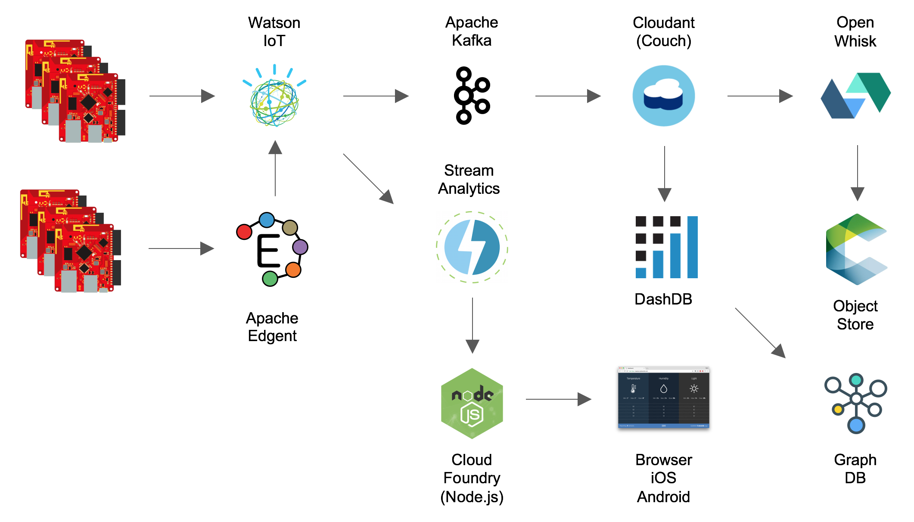

Analytics
at the Edge
Andrew Bodine
These slides are available at:
https://acbodine.github.io/iot-edge-analytics.htmlAgenda
- What to expect?
- Edge Analytics: What and Why?
- Edge Analyitcs at IBM
- Demo: Hands-on with Patterns
- Helpful links + Next steps
What should you expect to learn from this workshop?
- Basic IoT and Analytics nomenclature
- What Edge Analytics means, and why it's worth your time.
- The general flow of implementing IoT Edge Analytics.
- Types of cloud offerings IBM has to plug into this model.
- Types of run-anywhere offerings IBM has to plug into this model.
- How to demo Edge Analytics in action.
- Where to go to learn more.
Introduction to IoT Edge Analytics
Analytics
The process of inferring qualitative information, from quantitative streams of data.
at the Edge
For each edge in an IoT network tree
Edge Analytics is composed of:
- Things (Devices at the Edge)
- Data (Temperature, Pressure, Location, etc)
- Controllers
- Thresholds (When temp is too high)
- Actions (When thresholds are crossed)
Things at the Edge
Data at the Edge

Controllers at the Edge

What is the general flow of IoT Edge Analytics?
Why are Edge Analytics important?
- Constraints on IoT devices and their environments.
- Saves you $
- Less traffic clutter.
- More devices using same bandwidth
Why are Edge Analytics overlooked?
- Lack of domain knowledge
- Focus of existing documentation and tutorials
- Slightly harder to implement
Edge Analyitcs at IBM
Offerings related to general Edge Analytics flow
- Local Analytics
- Messaging
Run Anywhere: Local Analytics
Apache Edgent Documentation
Watson IoT Platform Documentation
Cloud: Messaging
Advanced Analytics flow with IBM Offerings
Hands-on with IoT Patterns
PatternCode
Where to go from here?
Now that we have covered the basics, you can follow the link below to dig deeper into the solution and expand on the Cognitive components.
Dig DeeperLinks for continued learning
Questions?
Following Up
If you want to ask a question pertaining to this content please feel free to open an issue in the repository where I maintain it:
https://github.com/acbodine/iot-lectures
Thank You
Andrew Bodine
acbodine@us.ibm.com